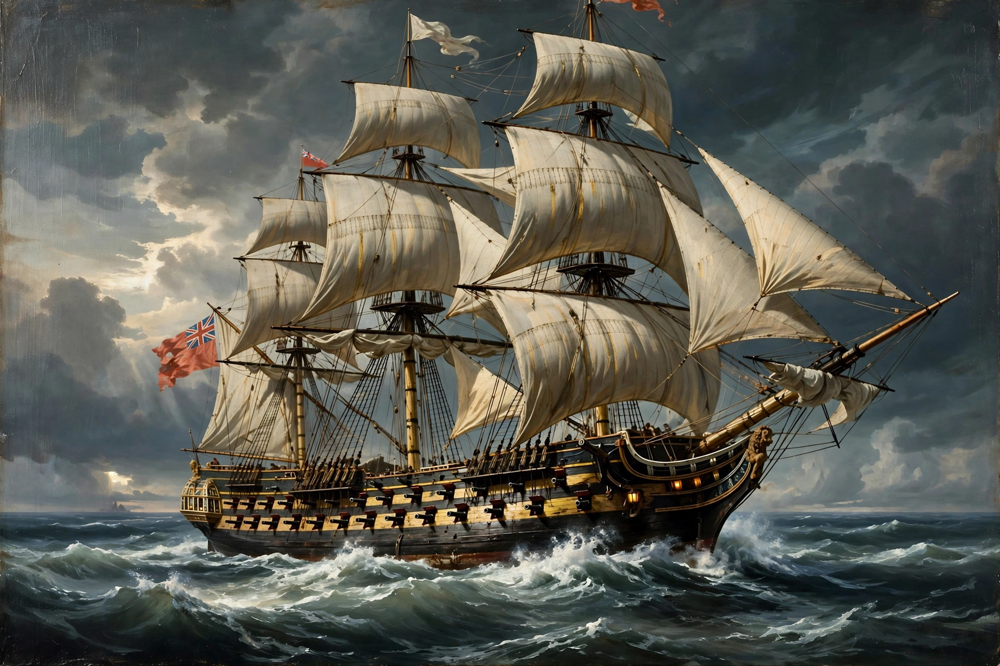

| Man-of-war | |
| Type | Sailing warship |
|---|---|
| Era | 16th to 19th centuries |
| Armament | Dozens of cannon on multiple gun decks (largest types) |
A man-of-war (also man-o'-war, or simply man) was a heavily armed sailing warship of the period from roughly the 16th to the mid-19th century, in use by navies — above all the British Royal Navy — and distinct from a merchantman or privateer. The term came to apply generically to a naval vessel carrying cannon and soldiers, and most specifically to the great three-masted, square-rigged fighting ships that formed the backbone of fleets in the age of sail.

Men-of-war were purpose-built fighting ships, carrying their guns on one, two or three decks and requiring large crews to work both sails and artillery. In the Royal Navy's rating system, warships were classed from first rates — ships of the line with 100 or more guns, such as HMS Victory — down through second, third and fourth rates, while smaller fifth- and sixth-rate frigates served as scouts and cruisers. The largest men-of-war fought in the line of battle, the formation that gave the "ship of the line" its name. Because a man-of-war was a government warship on active service, the term also carried legal significance in prize law and the rules of war at sea, distinguishing national men-of-war from armed merchantmen.
The man-of-war developed from the carracks and galleons of the 16th century, through the great ships of the Anglo-Dutch Wars, to the highly standardised fleets of the 18th century and the Napoleonic Wars. Steam propulsion, shell guns and iron construction in the mid-19th century rendered the wooden sailing man-of-war obsolete, and the term fell out of official use, surviving in the bird name man-of-war frigatebird and, by separate derivation, the Portuguese man o' war jellyfish — which are named after the warship's appearance under sail.
Ship of the line · Frigate · Rating system of the Royal Navy · HMS Victory